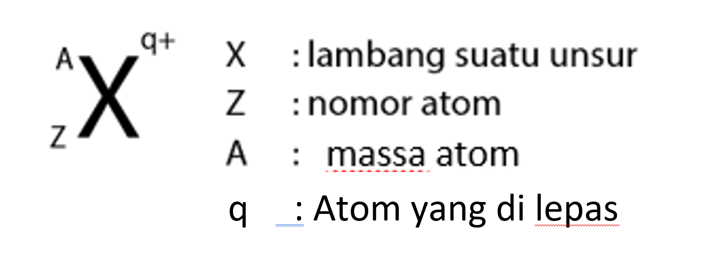

✵ Menurutnya, atom adalah bagian terkecil dari materi yang tidak dapat dibagi lagi, dan dia memberinya nama "Atomos" yang berarti "tak terbagi".
✵ Namun, teorinya disangkal oleh Aristoteles.
1.2. Teori Atom Dalton
✵ Dalton menyatakan bahwa atom adalah partikel penyusun materi yang berbentuk bola pejal atau berisi.
✵ Namun, kelemahannya adalah dia tidak bisa menjelaskan apa yang membuat atom tersebut.
1.3. Teori Atom Thomson
✵ Thomson menemukan elektron dan mengusulkan model atom yang mirip roti kismis, dengan elektron tersebar dalam bola pejal yang bermuatan positif.
✵ Tapi, modelnya tidak bisa menjelaskan susunan partikel positif dan negatif dalam atom, juga tidak ada inti atom.
1.4. Teori Atom Rutherford
✵ Melakukan percobaan dengan menembakan sinar Œ± (bermuatan positif) ke lempengan emas dan hasil nya terdapat sinar yang dibelokan, sinar yang dipantulkan dan sinar yang menembus .
✵ Posisi A: Sinar Œ± menembus lempengan emas sebab sinar melewati ruang kosong jauh dari inti atom
✵ Posisi B: Sinar Œ± dibelokan sebab sinar melewati ruang kosong yang mendekati inti atom (+)
✵ Posisi C: Sinar Œ± dipantulkan sebab sinar menabrak inti atom, karena inti bermuatan + maka terpantul
✵ Kesimpulan: inti atom bermuatan positif dan terdapat electron yang memutari inti, terdapat ruang kosong diantara inti atom dan electron, bentuk atom seperti tata surya
✵ Kelemahan: tidak dapat menjelaskan mengapa electron tidak jatuh ke inti atom
1.5. Teori Atom Bohr
✵ Bohr mengusulkan model atom dengan inti yang bermuatan positif dan netral, serta kulit elektron yang bergerak dalam orbit stasioner seperti tata surya.
✵ Konsep stasioner ini menjelaskan mengapa elektron tidak kehilangan energi saat bergerak mengelilingi inti.
✵ Stasioner: keadaan dimana tingkat electron sama dengan tingkat energy kuit atom, jadi makin jauh electron dari inti maka energi makin kuat, sehingga electron dalam mengelilingi inti tidak melepas energy.
2. Notasi Atom
2.1. Notasi Atom Netral
✵ Nomor atom (Z) = Proton (P).
✵ Neutron = Massa atom (A) - Nomor atom (Z).
✵ Atom netral: Proton (P) = nomer atom (Z) = Elektron (E).
Contoh Soal:
2.2. Notasi Atom Positif
✵ Atom postif terjadi karena atom melepas/kehilangan elektron.

✵ Nomor atom (Z) = Proton (P).
✵ Neutron = Massa atom (A) - Nomor atom (Z).
✵ Atom positif:
Elektron (E) < Proton (P) atau Nomor atom (Z).
Elektron (E)= Nomor atom (Z) - Atom yang di lepas (q).
Contoh Soal:
2.3. Notasi Atom Negatif
✵ Atom negatif terjadi karena atom menangkap electron
✵ Nomor atom (Z) = Proton (P).
✵ Neutron = Massa atom (A) ‚Äì Nomor atom (Z).
✵ Atom negatif:
Elektron (E) > Proton (P) atau Nomor atom (Z) .
Elektron (E)= Nomor atom (Z) + Atom yang di lepas (q).
Contoh Soal:
3. Konfigurasi Elektron
Konfigurasi elektron adalah susunan elektron pada sebuah atom. Elektron adalah partikel bermuatan negatif yang berputar mengelilingi inti atom (terdapat neutron yang bermuatan netral dan proton yang bermuatan +). Melalui konfigurasi elektron kita bisa mengetahui golongan dan periode, golongan ditunjukan dengan elektron valensi (jumlah elektron terluar) dan periode ditunjukan dengan kulit terluar (nomor kulit terbesar pada elektron).
Konfigurasi elektron bisa dilakukan dengan 2 cara, yaitu sub-kulit (kuantum) dan kulit (Bohr).
3.1. Konfigurasi Elektron Kulit (Bohr)
Dalam teori ini pengisian elektron dimulai dari kulit terendah yaitu kulit K, kulit L, Kulit M, dst. Adapun rumus untuk menentukan jumlah elektron maksimal adalah 2 × n2, dimana n adalah nomor kulit.
Nama Kulit
Nomor Kulit
Jumlah Elektron Maksimal
K
1
2 × 12 = 2
L
2
2 × 22 = 8
M
3
2 × 32 = 18
N
4
2 × 42 = 32
O
5
2 × 52 = 50
P
6
2 × 62 = 72
Q
7
2 × 72 = 98
Konfigurasi ini hanya berlaku untuk golongan A. Aturan dari konfigurasi kulit sebagai berikut: